Từ bài toán điện thoại của A.K. Erlang năm 1909 đến Thread Pool của AliSQL — Queueing Theory là ngôn ngữ toán học chung để hiểu mọi hệ thống hiệu năng cao: \(\lambda,\, \mu,\, \rho\), Little's Law, M/M/1, M/M/c, Erlang-B/C và Capacity Planning
Hàng đợi xuất hiện ở khắp nơi — từ siêu thị, bệnh viện đến CPU scheduler, I/O queue và database connection pool. Điều đáng kinh ngạc: tất cả đều có thể phân tích bằng cùng một framework toán học.
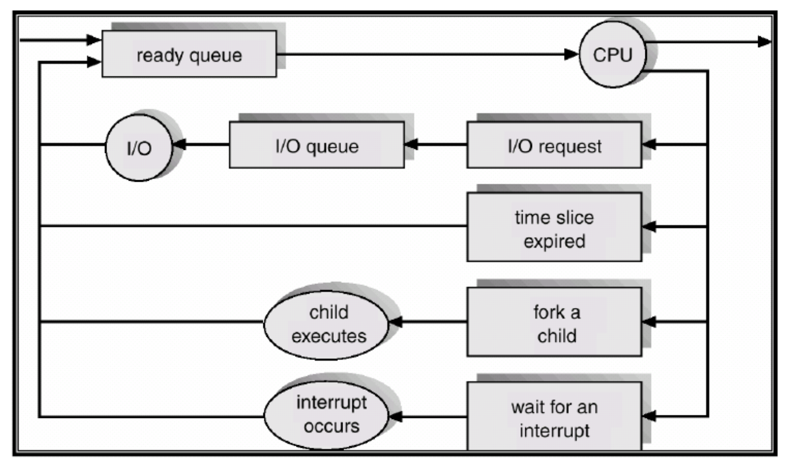
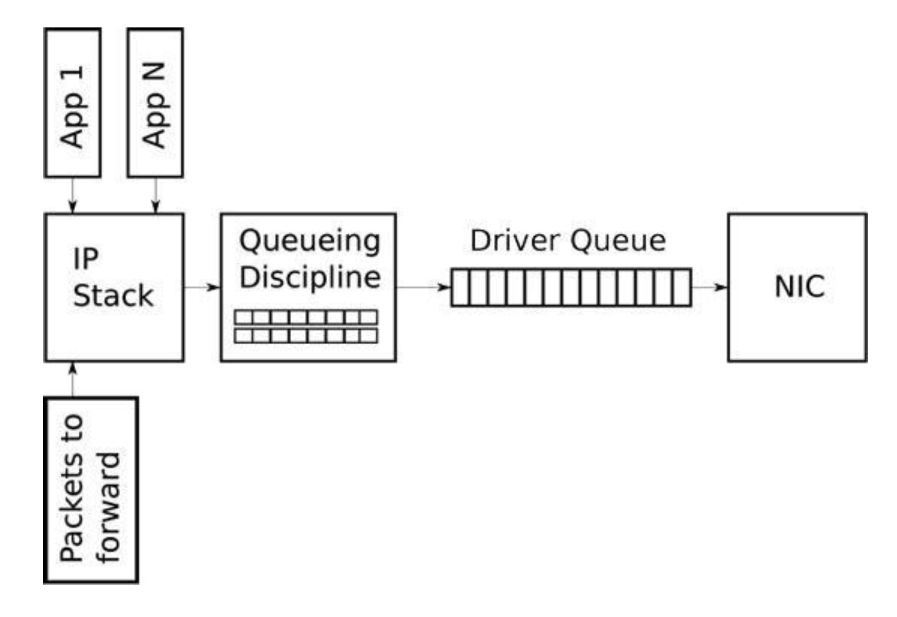
Lý thuyết hàng đợi ra đời không phải trong phòng thí nghiệm máy tính mà tại tổng đài điện thoại Copenhagen đầu thế kỷ 20. Kỹ sư điện người Đan Mạch Agner Krarup Erlang (1878–1929) đối mặt với bài toán thực tế cấp bách: cần bao nhiêu đường dây điện thoại để phục vụ một thành phố mà không lãng phí và không từ chối quá nhiều cuộc gọi?
Đặt quá nhiều đường dây — lãng phí chi phí hạ tầng. Đặt quá ít — người gọi nhận busy signal, công ty mất khách. Erlang cần tìm điểm cân bằng tối ưu giữa chi phí và chất lượng dịch vụ.
Từ 1909 đến 1920, ông dùng xác suất để mô hình hóa lưu lượng điện thoại, sáng lập ngành teletraffic engineering. Đơn vị lưu lượng viễn thông quốc tế được đặt theo tên ông: Erlang (E).
Erlang giải hai câu hỏi căn bản mà mọi hệ thống queueing đều gặp:
Hai công thức này vẫn dùng đến ngày nay trong call center, network capacity và database connection pool tuning.
Bất kỳ hệ thống xếp hàng nào cũng có thể mô tả đầy đủ bởi một bộ tham số. Hiểu các thành phần này là bước đầu tiên để phân tích định lượng.
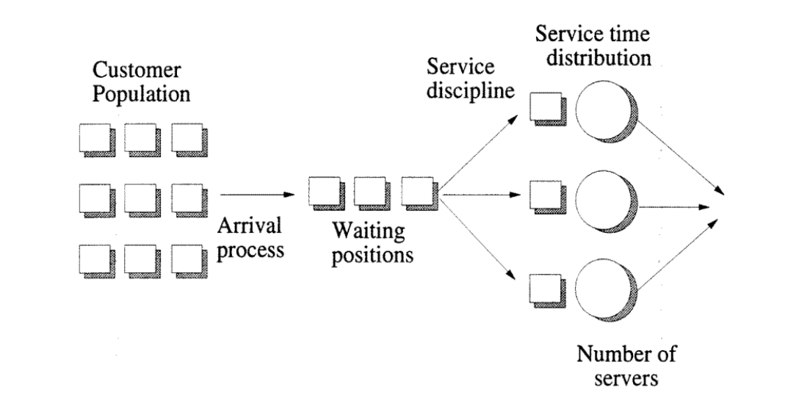
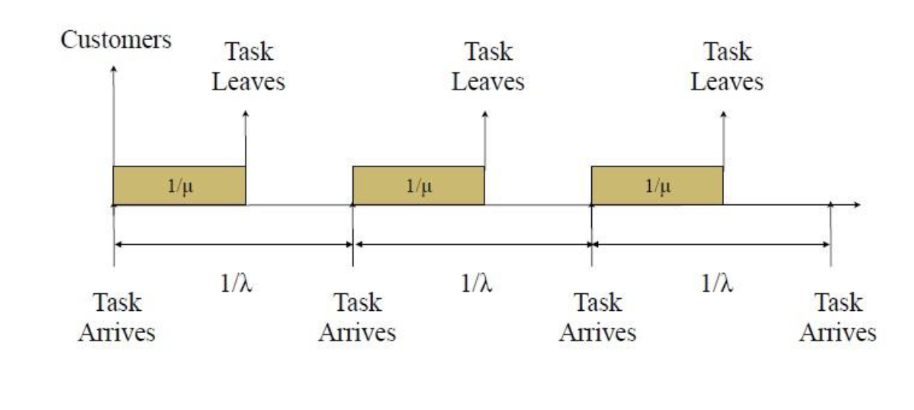
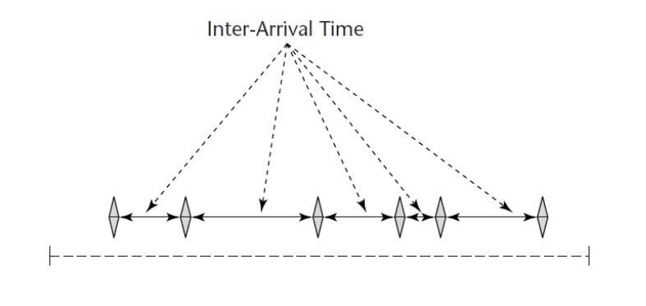
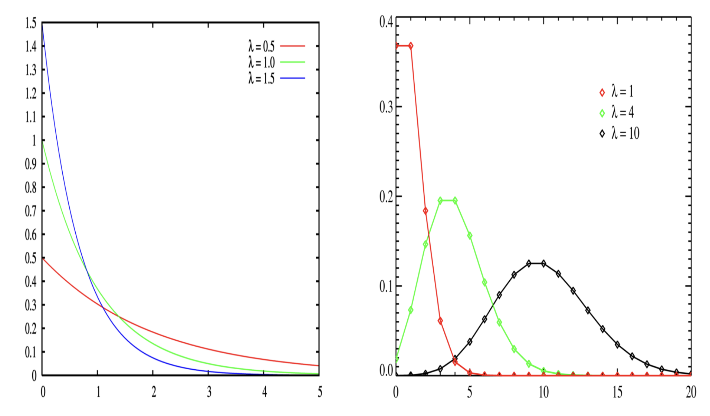
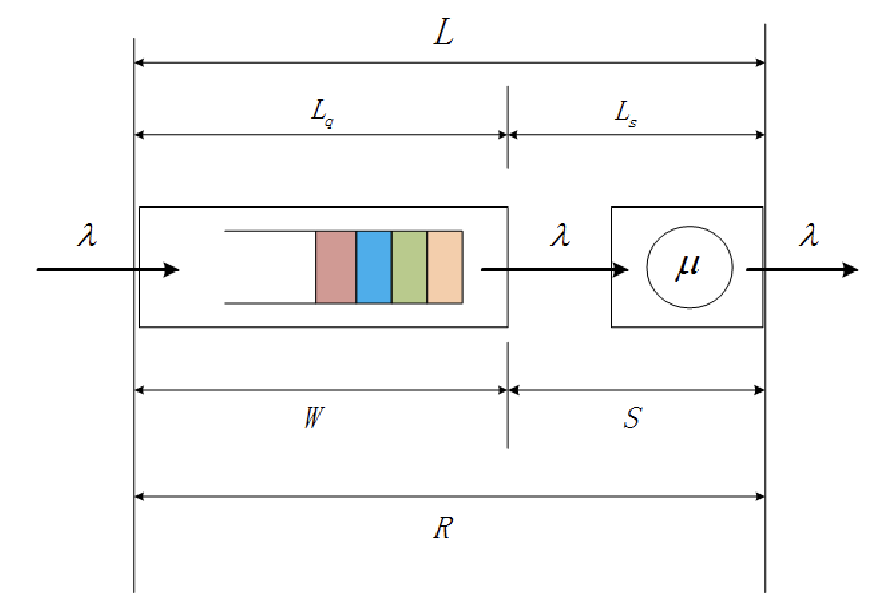
| Ký Hiệu | Tên | Đơn Vị | Ý Nghĩa & Ví Dụ Thực Tế |
|---|---|---|---|
| \(\lambda\) | Arrival Rate | req/giây | Tốc độ requests đến. Ví dụ: 1000 HTTP requests/s. Đo bằng rate(http_requests_total[1m]) trong Prometheus. |
| \(\mu\) | Service Rate | req/giây | Số requests một server hoàn thành trong 1 giây. \(S = 1/\mu\) = service time trung bình. Tối ưu code = tăng \(\mu\). |
| \(\rho\) | Utilization | \([0,\,1)\) | \(\rho = \lambda/(c\mu)\). Tỷ lệ thời gian server bận. Hệ thống ổn định khi \(\rho < 1\). Khi \(\rho \to 1\), queue \(\to \infty\). |
| \(L\) | Mean # in system | requests | Số requests trung bình trong hệ thống — gồm cả đang chờ và đang phục vụ. \(L = L_q + L_s\). Trong iostat: avgqu-sz. |
| \(L_q\) | Mean queue length | requests | Số requests trung bình chỉ đang chờ. \(L_q = L - \rho\) trong M/M/1. Khi \(L_q\) tăng → người dùng cảm nhận latency tăng. |
| \(W\) hay \(R\) | Response Time | giây | Thời gian từ request đến → hoàn thành (chờ + phục vụ). \(W = W_q + S\). Trong iostat: await. |
| \(W_q\) | Wait Time | giây | Thời gian chỉ chờ trước khi được phục vụ. \(W_q = W - 1/\mu\). Trong M/M/1: \(W_q = \rho/(\mu-\lambda)\). |
| \(S = 1/\mu\) | Service Time | giây | Thời gian phục vụ thuần túy không tính chờ. Trong iostat: svctm. |
Đây là insight quan trọng nhất mà nhiều kỹ sư bỏ qua: response time không tăng tuyến tính theo utilization — nó tăng theo hàm \(1/(1-\rho)\) và bùng phát khi \(\rho \to 1\).
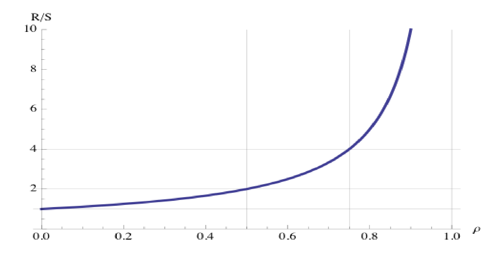
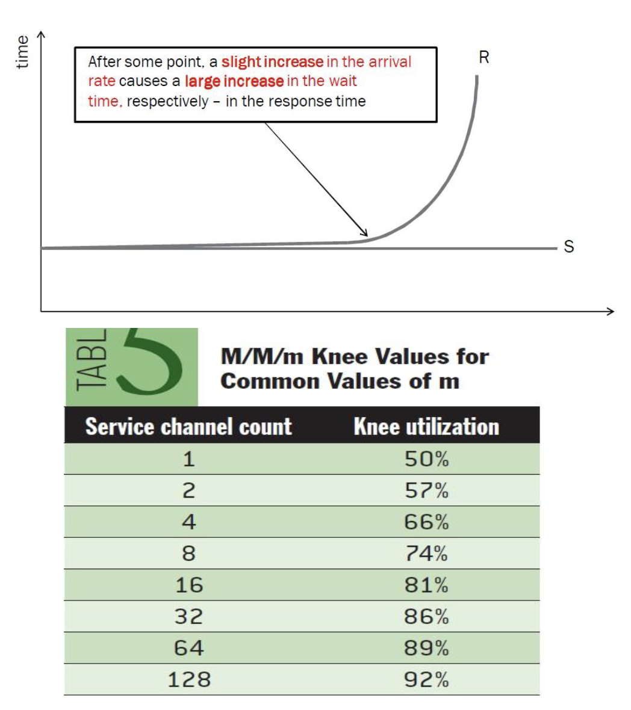
Từ công thức M/M/1 \(W = S/(1-\rho)\): khi \(\rho = 0.99\), \((1-\rho) = 0.01\) → \(W = 100S\). Hàng đợi tăng theo cấp số nhân, không phải tuyến tính. Capacity planning phải giữ \(\rho \leq 70\text{–}75\%\) — không phải vì lãng phí, mà vì cần buffer trước điểm bùng phát.
| Số Servers \(c\) | Knee Utilization | Ý Nghĩa Thực Tế |
|---|---|---|
| 1 (M/M/1) | 50% | Server đơn: target \(\rho \leq 50\%\) để response time ổn định |
| 2 | 57% | Pooling đã nâng knee thêm 7% |
| 4 | 66% | Thread pool 4: có thể chạy 66% an toàn |
| 8 | 74% | Knee > 70% — pooling hiệu quả rõ rệt |
| 16 | 81% | AliSQL với 16 cores, target \(\rho \leq 80\%\) |
| 32 | 86% | Large cluster: có thể push lên 86% |
| 64+ | 89–92% | Pooling hiệu quả cao: gần hết capacity mà vẫn ổn |
Với \(c\) servers pooled (M/M/c), utilization per server \(\rho = \lambda/(c\mu)\). Để \(W \leq kS\) ta cần \(\rho \leq 1 - 1/(c(k-1))\cdot f(c)\), trong đó \(f(c)\) tăng theo \(c\). Càng nhiều servers trong pool, hệ thống càng tolerant với high utilization — vì fluctuations được "trung bình hóa" qua nhiều servers. Đây là lý do pooling luôn tốt hơn fragmentation, ngay cả khi total capacity giữ nguyên.
Được J.D.C. Little chứng minh chính thức năm 1961, Little's Law đúng cho bất kỳ hệ thống ổn định nào — không cần giả thiết về distribution. Nó là bridge giữa lý thuyết và monitoring thực tế.
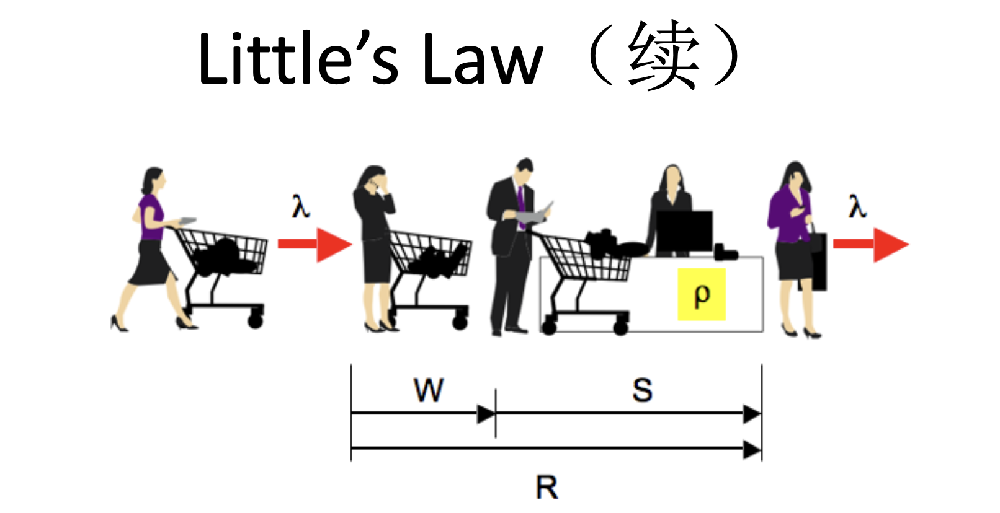
Quán bar có \(\lambda = 40\) khách/giờ vào, mỗi khách ở lại \(W = 15\) phút:
$$L = \lambda \cdot W = \frac{40}{60} \,\text{khách/phút} \times 15\,\text{phút} = 10\,\text{khách}$$Nếu quán chứa được tối đa 8 người → sẽ thường xuyên từ chối khách. Muốn giảm \(L\) xuống 8 mà giữ \(\lambda = 40\) → phải giảm \(W\) (phục vụ nhanh hơn, tức tăng \(\mu\)).
Giờ cao điểm: \(L = 20{,}000\) users online, \(3.6\) triệu giao dịch/giờ:
$$\lambda = \frac{3{,}600{,}000}{3600} = 1{,}000 \;\text{giao dịch/giây}$$ $$W = \frac{L}{\lambda} = \frac{20{,}000}{1{,}000} = 20\;\text{giây} \;\;\longleftarrow\;\text{THẢM HỌA!}$$Little's Law vừa biến dữ liệu monitoring thô thành insight hành động: cần tăng \(\mu\) lên 10× (giảm \(W\) xuống dưới 2s) hoặc giảm \(L\) qua caching/sharding.
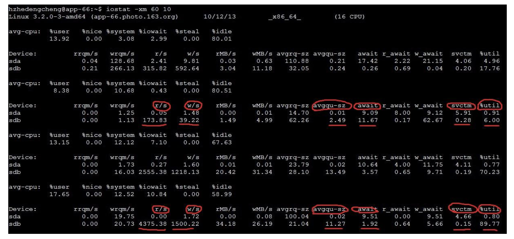
# iostat -xm 60 10 — trích dẫn một dòng:
Device: r/s w/s await svctm %util
sdb 173.83 39.22 11.67 0.28 6.00%
# Giải mã bằng Little's Law:
λ = r/s + w/s = 173.83 + 39.22 = 213.05 I/O/s
W = await = 11.67 ms = 0.01167 s ← response time
S = svctm = 0.28 ms = 0.00028 s ← 1/μ (service time)
# Verify Little's Law:
L = λ × W = 213.05 × 0.01167 = 2.49 ← phải = avgqu-sz = 2.49 ✓
# Verify Utilization Law:
U = λ × S = 213.05 × 0.00028 = 0.060 ≈ 6% ← phải = %util = 6.00% ✓Little's Law là công thức bên trong kernel Linux để tính avgqu-sz và %util. Khi biết điều này, iostat output không còn là "số liệu bí ẩn" mà là một hệ phương trình queueing có thể giải ngược để diagnose vấn đề.
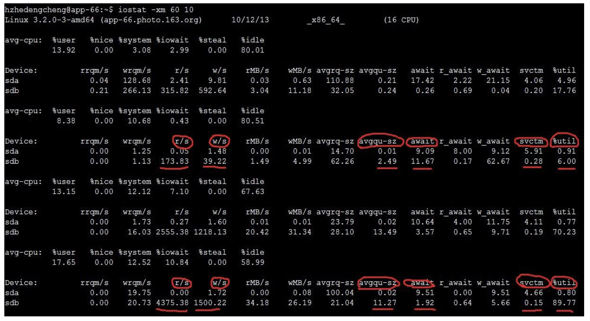
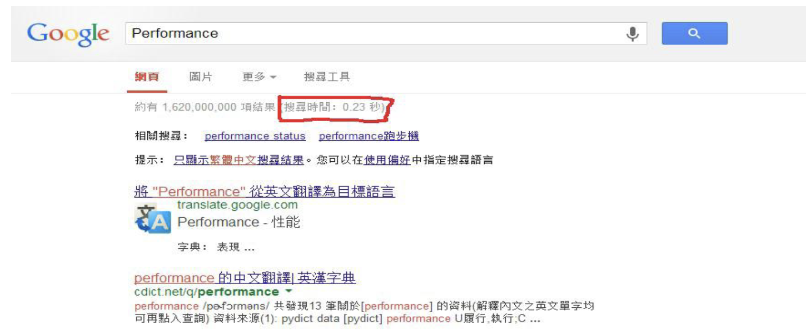
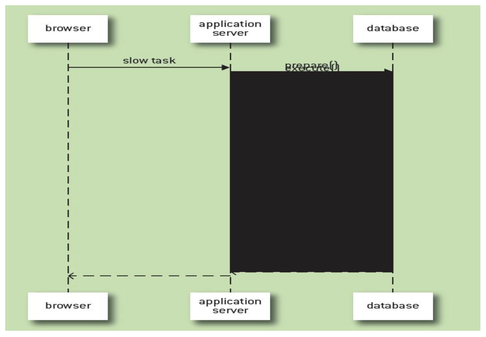
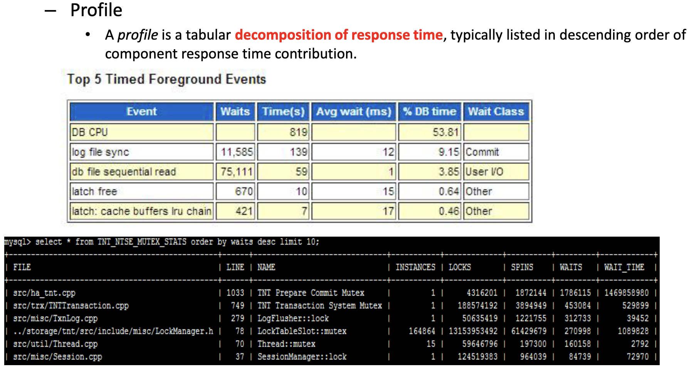
D.G. Kendall đề xuất ký hiệu chuẩn hóa \(A/S/c/K/N/D\) mô tả mọi hệ thống hàng đợi:
| Vị Trí | Ký Hiệu | Ý Nghĩa | Giá Trị Phổ Biến |
|---|---|---|---|
| \(A\) | Arrival distribution | Phân phối inter-arrival time | M = Markovian/Poisson, D = Deterministic, G = General |
| \(S\) | Service distribution | Phân phối service time | M = Exponential, D = Fixed, G = General |
| \(c\) | # Servers | Số servers song song | 1, 4, 8, \(\infty\) |
| \(K\) | Queue capacity | Số chỗ chờ tối đa | \(\infty\) (mặc định), hữu hạn (ring buffer) |
| \(N\) | Population | Dân số nguồn requests | \(\infty\) (mặc định), hữu hạn (closed network) |
| \(D\) | Discipline | Chiến lược scheduling | FCFS (mặc định), LIFO, Priority |
Poisson arrivals, Exponential service, 1 server. Đơn giản nhất nhưng capture được bản chất của hầu hết single-server systems. Mọi formula có closed form.
Poisson arrivals, Exponential service, \(c\) servers, single queue. Mô hình của database connection pool (max_connections = c), web server thread pool.
Poisson arrivals, General service time distribution. Khi service time không exponential — web requests với mixture of fast (CSS) và slow (DB-heavy) endpoints.
Queue giới hạn \(K\) items. Khi đầy, requests bị reject (Erlang-B behavior). Áp dụng cho: ring buffers, bounded channels, backpressure systems.
M/M/1 là mô hình đơn giản nhất nhưng chứa đựng mọi insight quan trọng. Hiểu sâu M/M/1 là nền tảng để hiểu tất cả các mô hình phức tạp hơn.
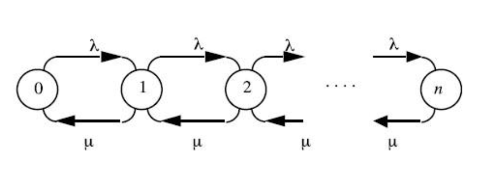
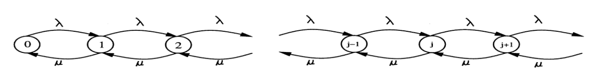
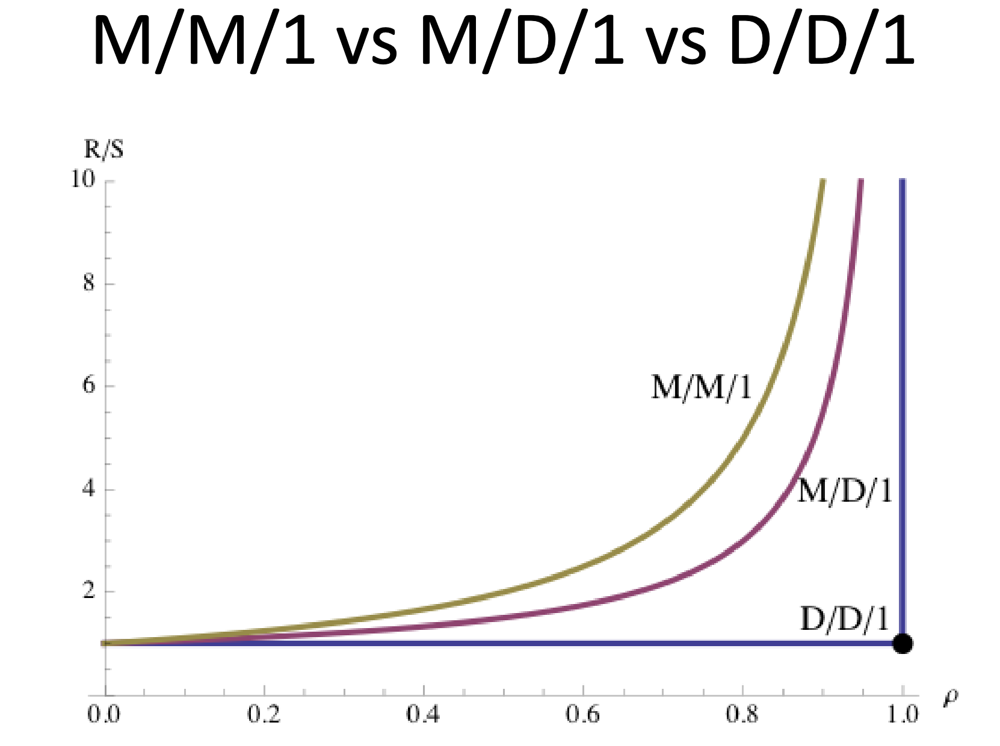
Công thức P-K cho M/G/1 (general service time distribution):
$$L_q = \frac{\rho^2}{1-\rho} \cdot \frac{1 + C_s^2}{2}$$Trong đó \(C_s^2 = \sigma_s^2/\bar{s}^2\) là coefficient of variation bình phương của service time. M/M/1: \(C_s^2 = 1\) (exponential). M/D/1: \(C_s^2 = 0\) (deterministic) → \(L_q\) giảm 2×. Kết luận: giảm variance của service time (không chỉ mean) trực tiếp giảm queue length. Đây là lý do cần tránh "slow outlier requests".
M/M/c là mô hình của thread pool, connection pool, và multi-core processing. Hiểu M/M/c giải thích tại sao pooling vượt trội so với multiple independent queues.
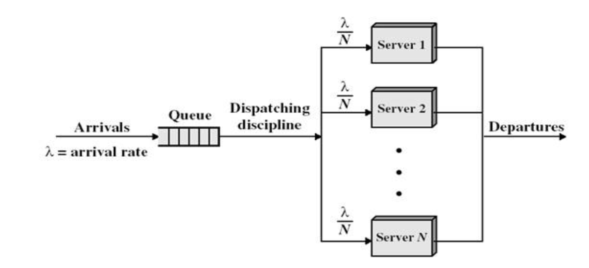
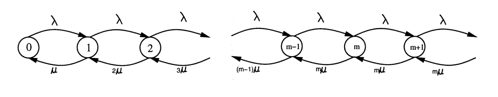
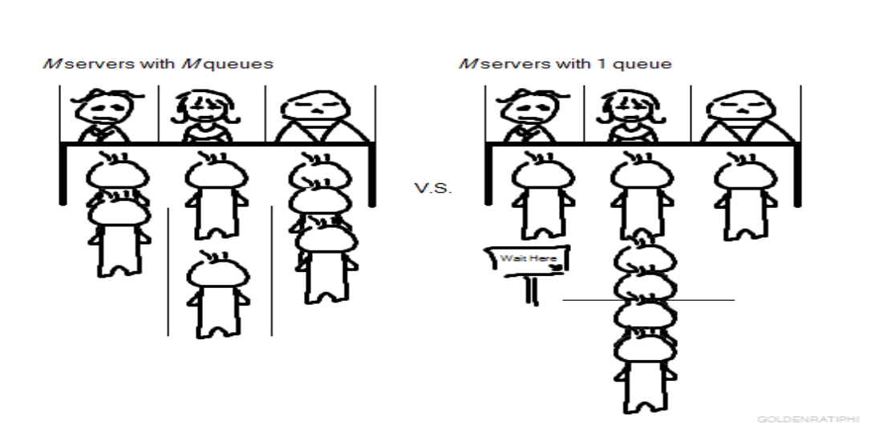
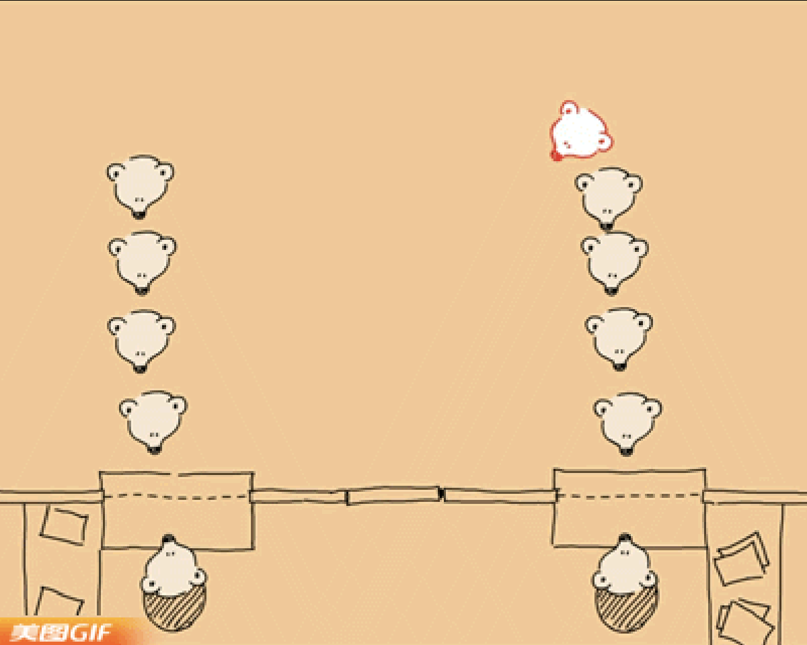
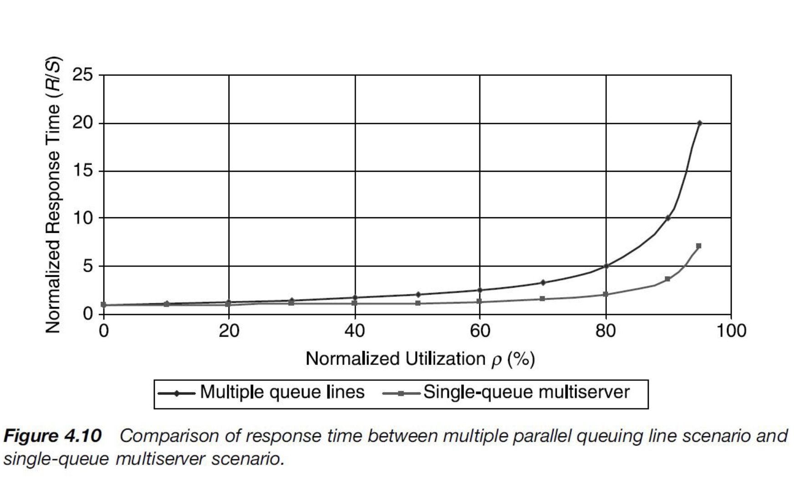
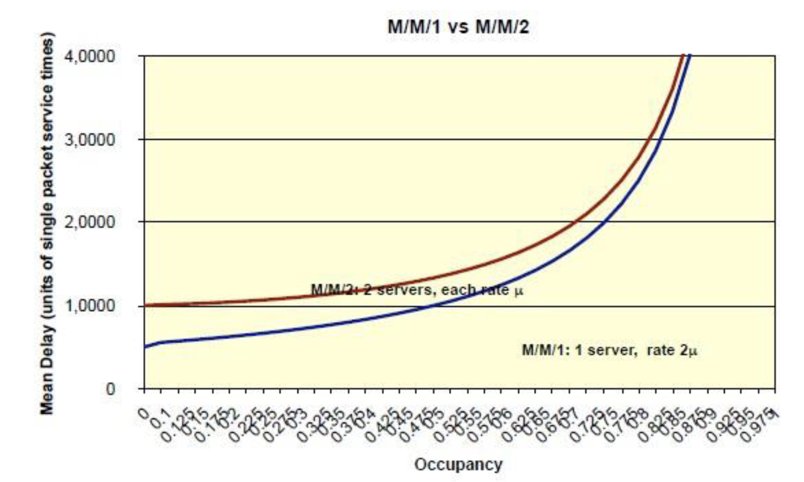
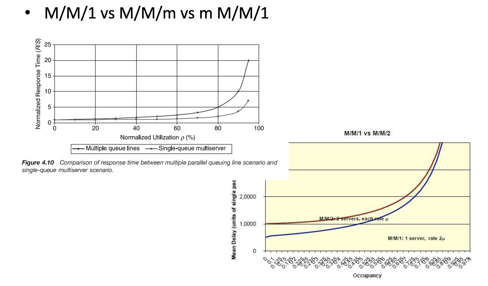
Traffic intensity: \(a = \lambda/\mu\) (Erlang load), utilization per server: \(\rho = a/c\), điều kiện ổn định: \(\rho < 1\)
$$P_0 = \left[\sum_{k=0}^{c-1} \frac{a^k}{k!} + \frac{a^c}{c!} \cdot \frac{1}{1-\rho}\right]^{-1}$$Erlang-C function — xác suất tất cả \(c\) servers đều bận (arriving customer must wait):
$$C(c,\,a) = \frac{\dfrac{a^c}{c!} \cdot \dfrac{1}{1-\rho}}{\displaystyle\sum_{k=0}^{c-1} \dfrac{a^k}{k!} + \dfrac{a^c}{c!} \cdot \dfrac{1}{1-\rho}}$$Wait time và response time:
$$W_q = \frac{C(c,\,a)}{c\mu - \lambda} \qquad\qquad W = W_q + \frac{1}{\mu} \qquad\qquad L_q = \lambda \cdot W_q$$Áp dụng khi requests bị từ chối ngay nếu tất cả servers bận — không có chỗ chờ. Ví dụ: database với hard reject khi max_connections đầy, cellular network circuits.
$$P_B = \frac{\dfrac{A^c}{c!}}{\displaystyle\sum_{k=0}^{c} \dfrac{A^k}{k!}}$$\(A = \lambda/\mu\) (traffic intensity, Erlang), \(c\) = số servers. Với connection pool size = 20 và peak load 15 Erlang → \(P_B \approx 6.3\%\) requests bị reject.
Áp dụng khi requests chờ nếu servers bận. Ví dụ: thread pool với queue, call center với hold queue.
$$P_W = \frac{\dfrac{A^c}{c!} \cdot \dfrac{c}{c - A}}{\displaystyle\sum_{k=0}^{c-1} \dfrac{A^k}{k!} + \dfrac{A^c}{c!} \cdot \dfrac{c}{c-A}}$$ $$W_q = \frac{P_W}{c\mu - \lambda}$$\(P_W\) = xác suất phải chờ. Call center sizing: với SLA "95% calls answered within 30s", Erlang-C cho biết số agents cần thiết.
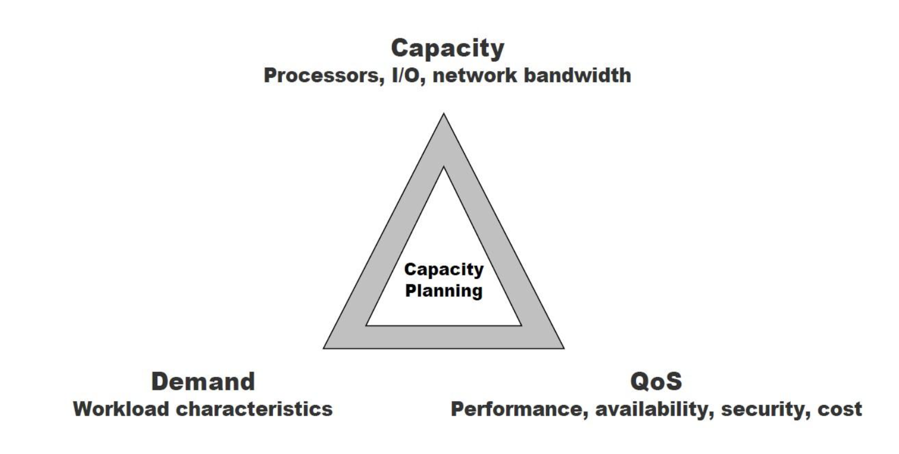
SLA: \(W \leq 200\text{ms}\). Peak load: \(\lambda = 5{,}000\;\text{req/s}\). Service time: \(S = 1/\mu = 20\text{ms}\):
Với 101 cores và \(\rho = 99\%\): khi \(\lambda\) tăng chút ít do traffic spike, \(\mu - \lambda/c \to 0\) → \(W \to \infty\). Với 144 cores và \(\rho = 70\%\), traffic có thể tăng thêm 30% mà \(W\) chỉ tăng ~2× — vẫn trong SLA. Buffer capacity = bảo hiểm chống traffic spike. 43 cores "extra" không phải là lãng phí — đó là chi phí SLA compliance.
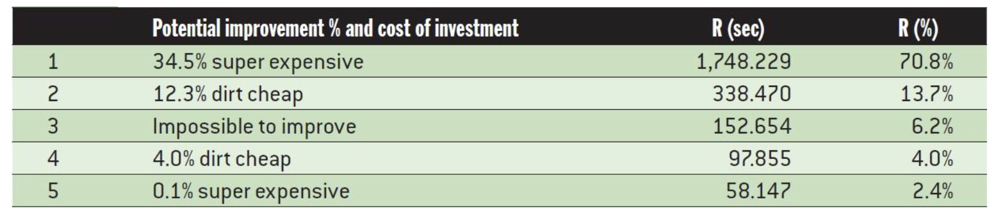
Alibaba đối mặt với bài toán kinh điển: Double 11 tạo ra hàng chục nghìn concurrent connections vào MySQL. Tạo 10,000 threads cho 10,000 connections thì sao?
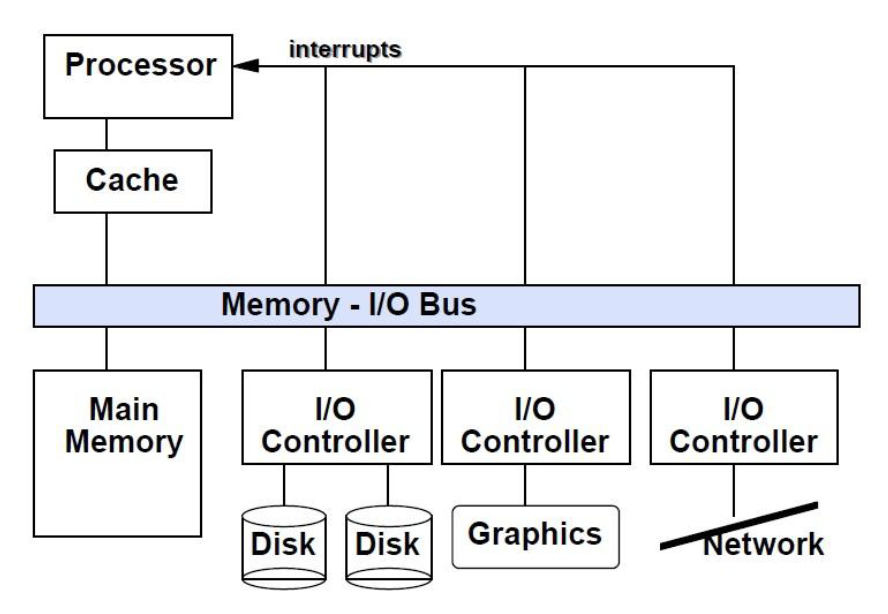
Optimal thread count từ Little's Law: để CPU luôn có việc làm (utilization = 1), cần \(c\) threads "in-flight" sao cho luôn có ≥ 1 thread trên CPU:
$$c^* = n_{\text{cores}} \times \left(1 + \frac{W_{\text{io}}}{W_{\text{cpu}}}\right)$$Database OLTP: \(W_{\text{io}} \gg W_{\text{cpu}}\) → ratio ≈ 3–7 → \(c^* \approx 4\text{–}8 \times n_{\text{cores}}\). Với 32 cores: \(c^* \approx 128\) threads phục vụ 10,000 connections.
Derivation từ Little's Law: mỗi request mất \(W_\text{cpu}\) trên CPU và \(W_\text{io}\) chờ I/O, tổng \(W = W_\text{cpu} + W_\text{io}\). CPU utilization = 1 khi số threads in-flight \(\geq W/W_\text{cpu} = 1 + W_\text{io}/W_\text{cpu}\). Nhân với số cores:
$$c^* = n_\text{cores} \cdot \frac{W_\text{cpu} + W_\text{io}}{W_\text{cpu}} = n_\text{cores} \cdot \left(1 + \frac{W_\text{io}}{W_\text{cpu}}\right)$$Đây là công thức tính thread pool size tối ưu cho mọi I/O-bound workload. Monitor \(W_\text{io}/W_\text{cpu}\) ratio bằng profiler để calibrate đúng \(c^*\) cho từng environment.
Queueing Theory kết nối sâu sắc với Amdahl's Law, hardware latency, memory model và distributed systems để tạo ra một framework hoàn chỉnh.
Amdahl: speedup bị giới hạn bởi serial section \(p\): \(S(N) = 1/((1-p)+p/N)\). Queueing Theory tinh tế hơn: ngay cả phần parallel cũng bị queuing delay khi có lock contention. Lock là M/M/1 queue — \(c\) threads tranh lock → arrival rate \(c\lambda_\text{lock}\) → response time tăng theo \(1/(1-\rho_\text{lock})\). Thêm threads đôi khi làm chậm hệ thống vì tạo ra M/M/1 queue ở lock.
Service time \(S = 1/\mu\) được quyết định bởi hardware: L1 hit = 0.5ns, DRAM = 100ns, SSD = 100μs, HDD = 10ms. InnoDB buffer pool là cache để tăng \(\mu\) — cache hit: \(S \approx 0.1\text{ms}\); disk miss: \(S \approx 10\text{ms}\), tức \(\mu\) giảm 100×. Sizing buffer pool đúng → tăng \(\mu\) → giảm \(\rho\) → giảm \(W\) theo \(W = S/(1-\rho)\).
False sharing (cache line invalidation) giảm effective \(\mu\) của "cache service" — mỗi write gây MESI invalidation, buộc cores khác serialize. Per-thread counters (MySQL 5.6) là \(N\times\)M/M/1 thay vì M/M/1 shared → giảm \(\rho\) per queue → giảm \(W\). False sharing tạo ra M/M/1 bottleneck ẩn không thể thấy từ CPU utilization metric.
Microservices chain: mỗi service call là một queue với \(W_i\). Total: \(W_\text{total} = \sum W_i\) (serial path) hoặc \(\max W_i\) (parallel). Little's Law cho whole chain: nếu một service slow (\(W_i\) cao), \(L_i = \lambda \cdot W_i\) tích lũy → cascading slowdown. Distributed tracing visualizes \(W_i\) per service để tìm bottleneck.
Tối ưu lớp 3 mà bỏ qua lớp 1 sẽ không bao giờ đạt kết quả tốt. Bỏ qua lớp 4 sẽ tạo race conditions không tái hiện được. Production-grade system cần cả bốn lớp.